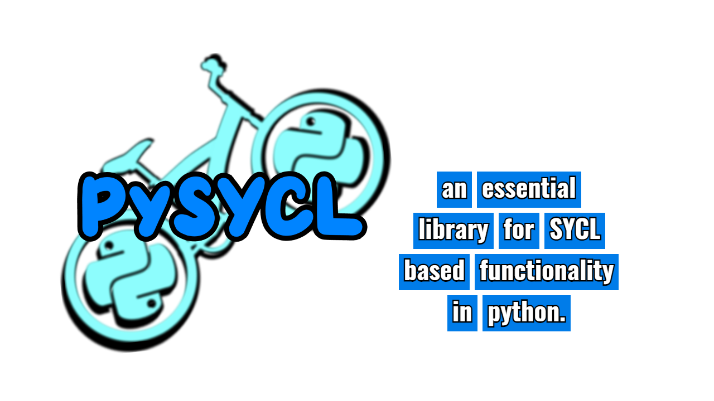

PySYCL enables Python users to write code that can be executed on hardware accelerators such as GPUs, FPGAs, and other devices that support the SYCL standard.
PySYCL provides a Pythonic syntax for writing code that can be executed on hardware accelerators.
PySYCL enables Python users to speed up their code by orders of magnitude via C++ backend that is written in the SYCL standard.
PySYCL facilitates the paralelization of Python code by providing simple to use modules that can be imported into Python scripts.
PySYCL is a Python abstraction layer for SYCL. The objective is to provide a simple and easy to use interface for SYCL functionalities within a Python programming environment. The project is currently in its early stages of development and is not yet ready for production use.